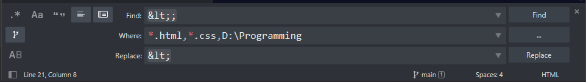

This webpage is used for my own record of interesting facts, tips and knowledge in my learning progress
2020-07-20，我发现我打错了基本上所有的named character，因此我开始使用sublime的内置Find All功能，里面的filter是wildcard属性。
wildcard说简单点就是一种搜索机制，我参考的是微软的搜索教程，也就是说星号代表任何匹配的东西，而我这里使用的便是在programming文件夹内搜索*.html以及*.css，以一次性选择所有的html和css文档，这样便可不影响到其他文件。类似如下:
